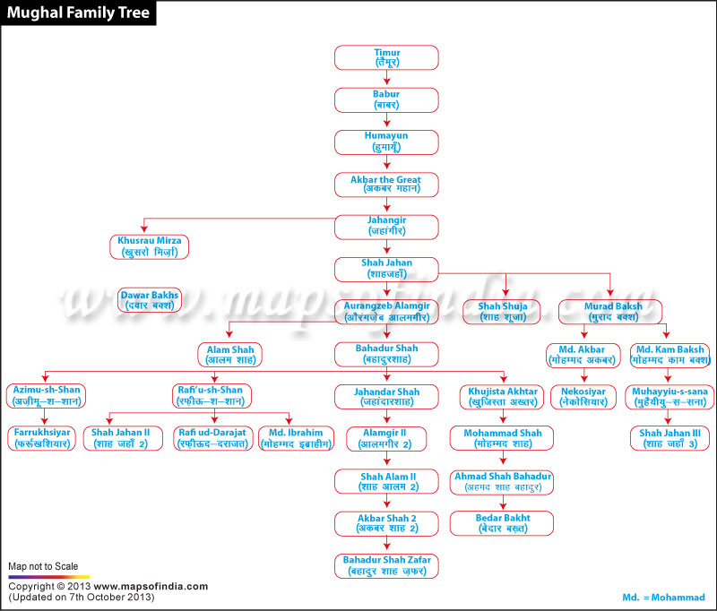
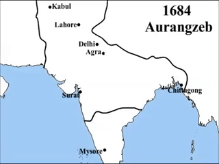

The reign of AURANGZEB
Who was Aurangzeb?
Aurangzeb was a ruthless king in his ruling years and had many victories.
In the reign of 49 years, Aurangzeb governed the Indian subcontinent as the sixth Mughal emperor of the Mughals.
Countless historians believe he was the last legitimate emperor of the Mughal Empire.
On November 3, 1618, he was born in Dahod, Gujarat.
He died in Bhingar, Ahmednagar, on March 3rd, 1707.
The battle of Deorai, which lasted two days, was one of Aurangzeb's most significant battles.
Aurangzeb's claim to the throne was confirmed by his victory in that fight.
childhood
.Born in Dahod, Gujarat on the 3rd of November,1618
.Was the third son of the emperor Shah Jahān and Mumtaz Mahal (for whom the Taj Mahal was built)
.Grew up as a serious-minded and devout youth
.Early on, he demonstrated military and administrative skill;
these traits, combined with a desire for dominance, drew him into conflict with his eldest brother, the bright and explosive Dārā Shikōh.
.He was ruthlesss and commanded troops against the Uzbeks and the Persians with distinction and victory
Middle life
.Was wedded to the Muslim orthodoxy of the day and free from the royal Mughal traits of sensuality and drunkenness.
. Was the sixth Mughal emperor who ruled over the entire Indian subcontinent for a period of 49 years

.Rose to power in 1658 in the midst of a bloody war of succession that left two of his brothers dead, a third exiled to Burma,and his father imprisoned.
.The conquest of the Deccan, to which Aurangzeb devoted the last 26 years of his life, was in many ways a Pyrrhic victory, costing an estimated hundred thousand lives a year during its last decade of futile chess game warfare
.His constant warfare, especially with the Marathas, drove his empire to the brink of bankruptcy just as much as the wasteful personal spending and opulence of his predecessors
.In 1689, the second Maratha Chhatrapati (King) Sambhaji was brutally executed by Aurangzeb
.Was intolerant of other religions, particularly Hindus. He was also an outspoken opponent of Shia Muslims.
.Named himself the “Seizer of the World” (Alamgir) and lived up to the title by seizing kingdom after kingdom during his forty-nine-year reign.
.Reign is divided into two periods
.1-Was a capable Muslim emperor of a combined Hindu-Muslim empire in the first, which lasted until around 1680,
.2-Portraiture grew simpler and backgrounds were muted, as opposed to the grandiose paintings of Shah Jahan's time.
Death
.Even when ill and dying, Aurangzeb made sure that the populace knew he was still alive, for if they had thought otherwise then the turmoil of another war of succession was likely
.He died of natural causes, those being terminal illnesses that had gotten to him had thought otherwise then the turmoil of another war of succession was likely
.He died at his military camp in Bhingar near Ahmednagar on 3 March 1707 at the age of 88 and had only 300 rupees with him which were later given to charity
.Eldest surviving son of Aurangzeb, Bahdur Shah I, took the throne after the fight, Following Aurangzeb's death on March 3, 1707
.Bahdur Shah, and his next eldest brother, Azam Shah, fought for the throne.
.Azam Shah declared himself successor to the throne, but was defeated in battle by Bahadur Shah
Facts
.Aurangzeb maintained the empire for nearly half a century and in fact extended it in the south as far as Tanjore (now Thanjavur) and Trichinopoly (now Tiruchchirappalli)
.The failure of the Mughals to cope with them after the reign of his son Bahādur Shāh I led to the collapse of the empire in the mid-18th century.
.The Tomb of Aurangzeb, the last influential Mughal emperor, is located in Khuldabad, Aurangabad district, Maharashtra, India
.The first overt sign of change was the reimposition of the jizya, or poll tax, on non-Muslims in 1679 (a tax that had been abolished by Akbar). This in turn was followed by a Rajput revolt in 1680–81, supported by Aurangzebs third son, Akbar. Hindus still served the empire, but no longer with enthusiasm
.Aurangzeb had different names and spellings- Aurangzeb, also spelled Aurangzib, Arabic Awrangzīb, kingly title ʿĀlamgīr, original name Muḥī al-Dīn Muḥammad
.Here is the increase of territory in the mughal empire during his reign
